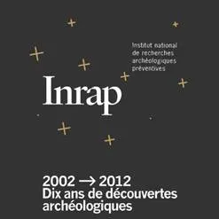

Découvrez à travers la conférence d'Alain Koelher sur l'utilisation des drones en Archéologie, notre implication dans la recherche opérationnelle sur la modélisation et les relevés archéologiques.
C'est à l'occasion de ce travail exploratoire que nous avons découvert une partie importante du site de Noyon.
